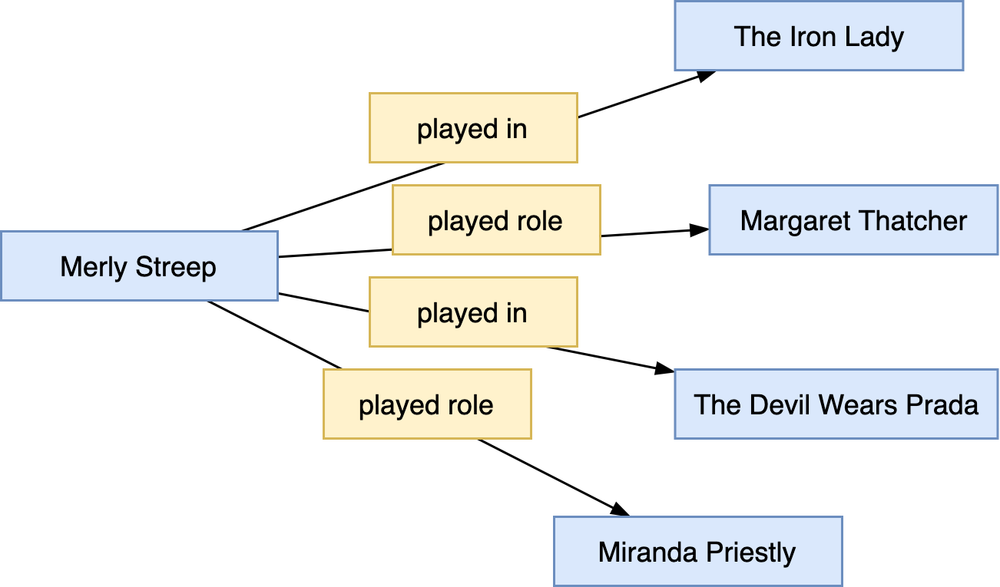

Fortschrittliche Modellierung mit SMW
N-äre Beziehungen
Nicht alle Aspekte eines Gegenstandsbereichs lassen sich durch Property-Value-Paare abbilden.
Example
Beispiel1:
“Meryl Streep played Margaret Thatcher in The Iron Lady”
- Properties
played roleundplayed inmit folgenden Statements - Meryl Streep played in The Iron Lady
- Meryl Streep played role Margaret Thatcher
- Allerdings existieren noch weitere Rollenbesetzungen von Merly Streep
- Meryl Streep played in The Devil Wears Prada
- Meryl Streep played role Miranda Priestly
Daraus resultiert der folgende konzeptuelle Graph:

Frage: Welche Rolle spielte nun Merly Streep im Film The Iron Lady ?
Ein erster Lösungsansatz
-
Erstellung einer neuen Seite mit dem Namen
Streep's role in The Iron Ladymit folgenden Eigenschaften:
[[role::Margaret Thatcher]] [[film::The Iron Lady]] -
Hinzunahme der Annotation auf der Meryl Streep Seite:
[[played::Streep's role in The Iron Lady]]Tip
Aufgabe:
- Stellen Sie obigen Modellierungsansatz in einem konzeptuellen Graphen dar
- Beurteilen Sie obigen Modellierungsansatz im Hinblick auf Flexibilität, Wartbarkeit, Datensparsamkeit. Beachten Sie insbesondere, dass Meryl Streep in Ihrer beruflichen Laufbahn in mehr als 89 Filmen (Quelle: IMDB.com) mitgewirkt hat.
Ein Lösungsansatz mit Subobjects
-
Erstellung eines neuen Subobjects auf der Meryl Streep Seite mit den properties
movieundrole{{#subobject:The Iron Lady |role=Margaret Thatcher |movie=The Iron Lady }}Tip
Aufgabe:
- Stellen Sie den neuen Modellierungsansatz in einem konzeptuellen Graphen dar
- Beurteilen Sie den gerade entworfenen Modellierungsansatz erneut nach Flexibilität, Wartbarkeit, Datensparsamkeit.
-
Tipp:
-
Um die Abfragekomplexität zu verringern kann es gelegentlich sinnvoll sein, innerhalb eines Subobjects Informationen zu hinterlegen, auf welcher Seite es eingebettet ist (in RDF: zu welchem Subject es gehört). Dies kann mit einem zusätzlichen frei zu definierenden Property realisiert werden, dessen Value dem Seitennamen entspricht, auf dem das Subobject eingebettet ist.
Example
Beispiel:
Stating that the subobject
The Iron Ladywas embedded on theMeryl Streeppage{{#subobject:The Iron Lady ... |played by=Meryl Streep }}Falls das Subobject mittels einem Template transkludiert wird, so kann für die Angabe des Seitennamens das Magic Word
{{PAGENAME}}verwendet werden2. -
Explizit benannte Subobjects können von überall aus in einem Semantic MediaWiki adressiert und in Annotationen genutzt werden:
[[played::Meryl Streep#The Iron Lady]]Bei anonymen oder unbenannten Subobjects ist dies nicht möglich, da ein interner Bezeichner als Identifier vergeben wird, der im Sourcecode der wiki Seite nicht zu sehen ist.
-
-
Das Beispiel stammt aus den SWM Tutorial-Unterlagen von Prof. Dr. Markus Krötzsch von der SMWCon Fall 2012. ↩
-
Unter https://www.mediawiki.org/wiki/Help:Magic_words findet sich eine Liste aller in MediaWiki unterstützter Magic Words. ↩